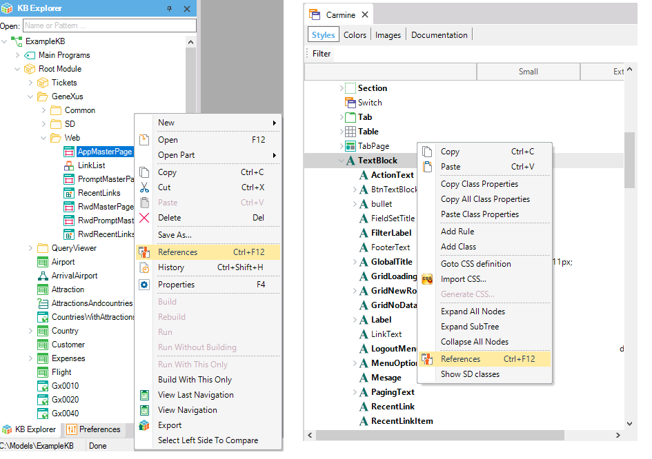
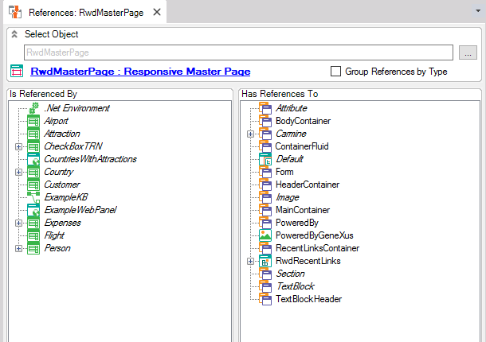
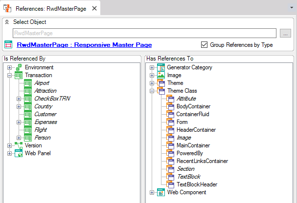
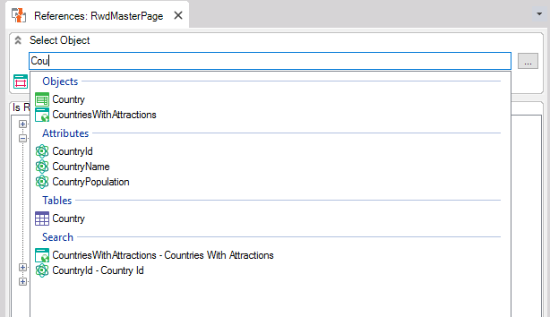

Sometimes you might need to know the relationships existing between our Knowledge Base objects. The References menu option, listed in the contextual menu of each object or theme class, allows us to know about such relations.  References WindowsThe References window has two panels. On the left panel, you can see the objects that refer to the given object or class. On the right panel, you see the objects or classes referenced by it. The following image shows references made from and to the AppMasterPage Web Panel.  Notes1. Names in italics indicate that the object may be deleted despite the existing references to it. 2. Since GeneXus 16 Upgrade 11, for each object that accesses the table, it is indicated (in brackets) if it performs an insert, update or delete on it. Group ReferencesThe Group References by Type checkbox gives us a simple way to organize references by grouping objects by type in their own panels.  Select an ObjectYou can use the search bar to select one object from our Knowledge Base and display its references (you also have the three-point button to do this).  See also
|
| Backlinks | |
| DesignOps - Guide for developers | Management considerations on Theme classes |